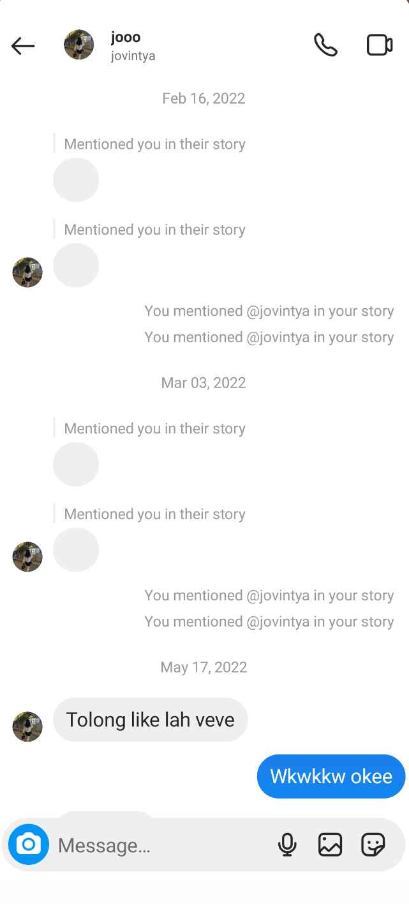

Selamat Datang di Destinasi Kelima, tahun 2022
Kali ini tahun 2022, tahun kita mulai ... asing? Ya, jujur itu yang w rasain. Di tahun ini keakraban kita mulai renggang dan udah
mulai canggung. Untuk urusan ini kita memang nggak bisa salahin siapa-siapa. Karena sekali lagi, kita punya kesibukan dan masalah
masing-masing. W gak tau lu di sana lagi apa, ada masalah apa, dan sebaliknya. Mungkin karena baru satu tahun dengan kehidupan
baru, kita harus lebih dan lebih fokus untuk beradaptasi
Di tahun ini w punya banyak tekanan, karena ini awal sekolah offline mulai dilakukan. Selain karena gak kenal siapa-siapa di kelas,
ada banyak hal yang membuat w harus memaksa diri w sendiri. Dan w tau, pasti sulit juga untuk lu di sana. Karena, ada banyak hal
harus dilaluin sendiri. Terima kasih telah bertahan. Mungkin kedengarannya canggung, tapi ternyata diri kita butuh kata "terima kasih'